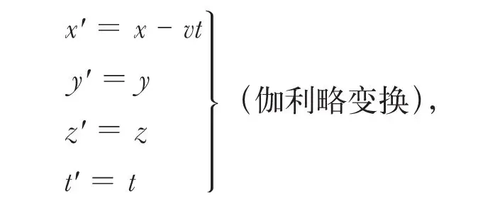
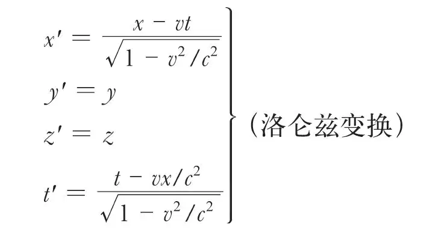
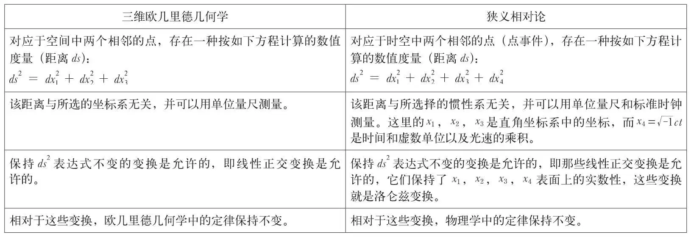
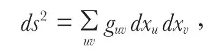

英文
英文爱因斯坦
编者按
爱因斯坦的相对论在1921年得到了大家的广泛认可。在这篇演讲稿中，爱因斯坦从物理学力图摆脱超距作用的影响开始，对这个理论的历史沿革进行了回顾。麦克斯韦的电磁理论完成了这一使命，其他物理学家根据他的数学公式提出了以太假说，即认为所有的空间中都充满了作为电场和磁场媒介的以太。这使相对性原理遇到了困难，而爱因斯坦通过放弃事件的同时性可能与观测者的运动无关的观点摆脱了这个困境。但是这种新的理解没有考虑到重力。爱因斯坦猜测重力和惯性可能具有同一性，这一构想促使他提出了广义相对论。爱因斯坦设想重力和电现象或许也可以用一种适用于所有自然力的理论统一起来，这也是今天的物理学家们正在寻找的理论。 英文
用尽可能简练的语言来阐述一系列观念的演变，但仍充分完整地把这种演变的连续性保留下来，这是一件很吸引人的事。在讲述相对论的发展时，我们将尽力做到这一点，并说明其整个发展过程是由一系列细微而又不言而喻的思维过程构成的。 英文
整个发展历程始于并受制于法拉第和麦克斯韦的观念，按照他们的观念，所有的物理过程都包含连续作用（与超距作用相反），或者用数学语言来表示就是利用偏微分方程来描述物理过程。麦克斯韦利用真空位移电流的磁效应概念以及感生电动力场和静电场在本质上完全相同这一假定，成功地构筑了描述静止介质中电磁过程的偏微分方程。 英文
把电动力学理论推广到运动物体的重任落在了麦克斯韦的后继者的身上。赫兹试图通过赋予虚空（以太）与一般有重物质颇类似的物理性质来解决这个问题。特别是，与有重物质一样，以太在空间的每一点上都应该有确定的速度。正如静止物体那样，如果电流或磁流的变化速度是以随物体一起运动的曲面元作为参考的话，那么电磁感应或者磁电感应应当分别由电流或磁流的变化率决定。但是赫兹的理论与斐索有关光在流动液体中传播的基本实验相矛盾。就是说，麦克斯韦理论对运动物体的这种最直接的推广与实验结果不符。 英文
正在这时，洛仑兹进行了补救。由于洛仑兹是物质原子理论的忠实支持者，所以他觉得不能把物质看成是连续电磁场的所在地。因此，他设想这些场是连续的以太的某种状态。洛仑兹认为，从力学和物理学两方面的观点来看，以太在本质上与物质无关。以太不参与物质的运动，以太和物质之间的相互关系仅在于，物质被看成是所附电荷的载体。洛仑兹理论的重要价值在于，它使包括静止物体和运动物体在内的整个电动力学回归到了真空中的麦克斯韦方程。该理论不仅在方法论上超越了赫兹的理论，而且洛仑兹还利用它非常成功地解释了许多实验事实。 英文
这个理论似乎仅仅在一个重要的基本点上不能令人满意。这就是，似乎某个具有特殊运动状态的坐标系（它相对于以太是静止的）要比相对于这个坐标系运动的所有其他坐标系更加优越。从这一点上来看，这个理论好像违背了经典力学，因为在经典力学中，所有相互间做匀速运动的惯性系都同样有理由被用来当作坐标系（狭义相对性原理）。在这一点上，包括电动力学领域在内的所有经验（尤其是迈克尔逊实验）都支持所有惯性系均等价这一观点，即都支持狭义相对性原理。 英文
狭义相对论就是为解决这一困难而诞生的，这个困难由于它具有的根本性而无法让人容忍。狭义相对论最初被用于解答下述问题：狭义相对性原理真的与真空中的麦克斯韦场方程矛盾吗？答案似乎是肯定的。因为，如果某些方程对于坐标系K是成立的，而且我们引进一个新的坐标系K′，使它符合于（显然容易做到）如下的变换方程：

那么麦克斯韦场方程组在新的坐标系（x', y', z', t'）中不再成立。但表面现象是靠不住的，在更透彻地分析时间和空间的物理意义后发现，伽利略变换是建立在几个相当任意的假设上面的，尤其是假设同时性的陈述与所使用的坐标系的运动状态无关。研究表明，如果我们利用下面的变换方程，则真空中的场方程可以满足狭义相对性原理：

在上述方程中x、y、z表示位置坐标，用相对于坐标系静止的量尺来测量；t表示时间，用处于静止状态的经过适当校准并且具有相同构造的时钟来测量。 英文
现在，为了使狭义相对性原理成立，要求所有的物理方程在使用洛仑兹变换来计算它们从一个惯性系到另一个惯性系的转换时其形式保持不变。用数学语言来描述就是，所有描述物理定律的方程相对于洛仑兹变换必须是协变的。因此，从方法论的角度来看，狭义相对性原理可以与第二种永恒运动不能实现的卡诺定理相比拟，因为正如卡诺定理一样，狭义相对性原理为我们提供了所有自然规律必须遵守的一般法则。 英文
随后，闵可夫斯基找到了一个特别简洁而又极具启发性的方式来表述这个协变条件，揭示了三维欧几里德几何学与物理学中时空连续统之间的对应关系。 英文

由此可以看出，时间坐标在物理方程中的作用与空间坐标等价（除了实数性之外），虽然不是就其物理意义而言。按照这种观点，物理学过去和现在都是一种四维欧几里德几何学，或者，更确切地说，是四维欧几里德连续统中的一种静力学。 英文
狭义相对论的发展经历了两个主要阶段，这就是使时空“度规”适合于麦克斯韦电动力学，以及使物理学中的其余部分适合于这个新的时空“度规”。第一个阶段的成果有同时性的相对性、运动对量尺及时钟的影响、运动学的修正，特别是还有新的速度相加定理。第二个阶段给我们提供了在高速情况下对牛顿运动定律的修正，以及关于惯性质量本质的具有基本重要性的知识。 英文
研究表明惯性不是物质的基本属性，也不是一个不能分解的基本量，而只是能量的一个属性。如果我们赋予一个物体大小为E的能量，则此物体的惯性质量将增加E/c2，这里c是光在真空中的传播速度。同样，一个质量为m的物体将被认为具有mc2的能量。 英文
此外，我们很快发现很难把引力科学同狭义相对论以自然的方式联系起来。这种情况使我意识到引力具有一种不同于电磁力的基本性质。在引力场中，所有物体都以相同的加速度下落，或者说，一个物体的引力质量和惯性质量在数值上是相等的（这只不过是同一个事实的另一种表达方式）。这种数值上的相同暗示着两者本质上的等同。引力和惯性能够等同吗？这个问题直接导致了广义相对论的产生。如果我把作用于所有相对于地球静止的物体上的离心力想象成是一个“真实的”引力场，或者是这种引力场的一部分，那我难道不能认为地球是不转动的吗？如果这个想法能够实现，那么我们已经真正证明了引力和惯性的等同性。在不随地球转动的参考系里看来是惯性的这一特性，在随地球一起转动的参考系里可以被解释为引力。按照牛顿的观点，这样的解释是说不通的，因为牛顿定律告诉我们，离心力场不能被看作是由物质产生的，而且因为在牛顿的理论中，没有把“科里奥利场”这种类型的场当成是“真实的”场。但是，或许牛顿的有关场的定律可以用场的另外一种定律取代，这种定律既适合于这种场又在“转动”坐标系中成立？我坚信惯性质量与引力质量的等同性，这使我有绝对的信心认为上述解释是正确的。就这一点来说，我从以下观点中受到了鼓舞。我们熟悉“表观的”场，这些场在那些相对于一个惯性系做任意运动的坐标系中是有效的。借助于这些特殊的场，我们应当有可能研究引力场通常所满足的定律。关于这一点，我们不得不考虑这样的事实，即有重物质是产生场的决定性因素。或者可以这样表达，按照狭义相对论的基本结果，能量密度这个具有张量变换特性的物理量是产生场的决定因素。 英文
另一方面，基于对狭义相对论度规结果的考虑导致了这样的结论，即欧几里德度规不再适用于加速参考系。尽管它使理论的进程延迟了几年，但是这个巨大的困难在我们认识到欧几里德度规对于小的区域依然适用之后就变得比较容易解决了。结果，ds这个迄今在狭义相对论中定义的物理量，在广义相对论中其物理含义仍保持不变。但是坐标本身失去了直接的意义，而完全退化成没有物理意义的数字，它们的唯一用途是标记时空点，因此广义相对论中的坐标与曲面论中高斯坐标的作用相同。以上的叙述必然给出这样一个结论：可测量的量ds必定可以用这种广义坐标表达为以下形式：

这里符号guv是时空坐标的函数。以上的分析还表明，因子guv随时空变化的特性，一方面决定了时空度规，另一方面还决定了支配质点力学行为的引力场。 英文
引力场的定律主要取决于以下几个条件：第一，它应该在任意选择的坐标系中都是有效的；第二，它应当由物质的能量张量决定；第三，它所包含的因子guv的微分系数最高不超过二阶，并且它相对于这些微分都是线性的。这样我们就得到了一个定律，虽然它在本质上不同于牛顿定律，但是在由它给出的推论中它与牛顿定律吻合得很好，以至于发现只有很少几个判据能够用来对它进行决定性的实验检验。 英文
下面是一些目前尚待解决的重要问题。电场和引力场在特性上真的有那么不同以至于不能用一个形式上的统一体把它们都包含进去吗？引力场对物质的结构起一定作用吗？原子核内部的连续统在相当程度上可以被看作是非欧氏的吗？最后一个问题涉及到宇宙论，即惯性是否源自于远距离物质之间的相互作用？与后者相关的是：宇宙的空间范围是有限的吗？在这一点上我的观点和爱丁顿的观点相悖。与马赫一样，我感到迫切需要一个肯定的答案，但暂时还找不到证据证明。只有从这样的观点（即认为在广袤宇宙空间使用牛顿引力定律具有局限性的观点）出发来对庞大恒星系的动力学进行研究之后，才有可能最终获得解决这一令人困惑的问题的确切依据。 英文
（王锋 翻译；张元仲 审稿）
* 由罗伯特·劳森博士翻译。